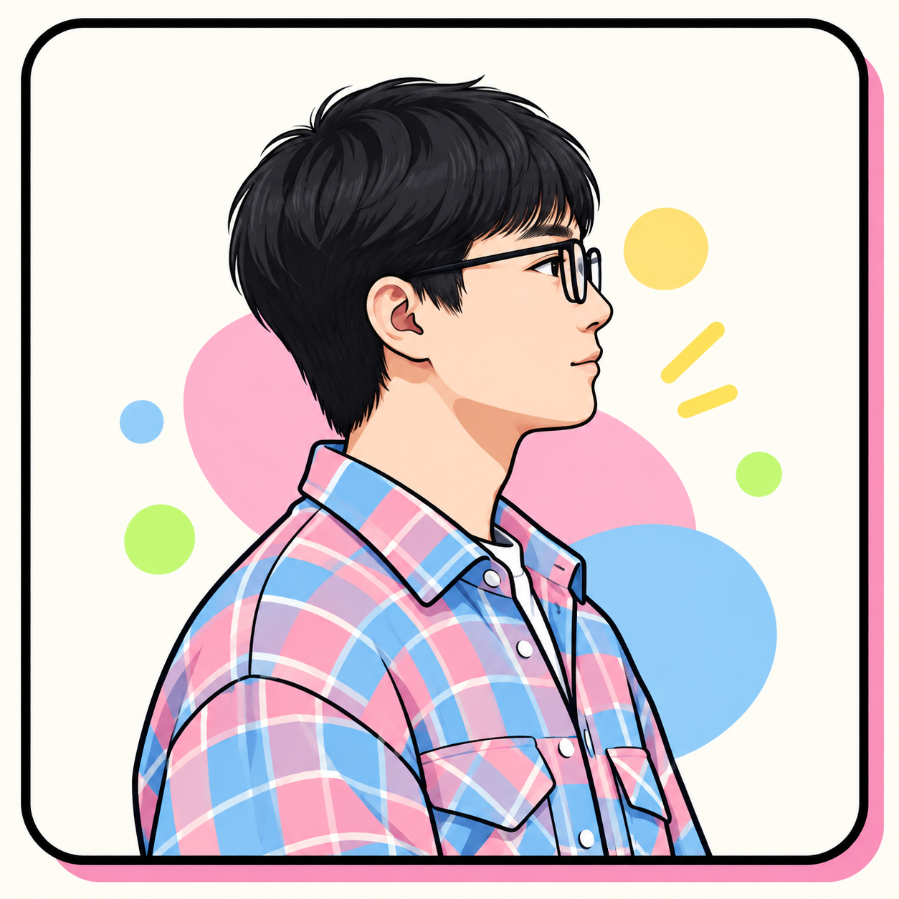

你好啊，我是九公子，一个不甘平庸的 90 后。
写了七年代码，敲过无数个通宵的键盘，也拿过还不错的薪水。
但三十岁那年，我还是决定自救——不想让人生只剩 Bug 和需求。
于是开始写公众号，把程序员的严谨和内容人的表达拧在一起。
3 年多，公众号和小红书都过了万粉，身边聚起近 400 个一起写作的人。
说句真话：做内容不比写代码轻松。但我不想停下来。
我会一直朝着自己喜欢的方向前进！
不知道 3 年、5 年、10 年后的我会成为什么样的人，过上什么样的生活呢？

你好啊，我是九公子，一个不甘平庸的 90 后。
写了七年代码，敲过无数个通宵的键盘，也拿过还不错的薪水。
但三十岁那年，我还是决定自救——不想让人生只剩 Bug 和需求。
于是开始写公众号，把程序员的严谨和内容人的表达拧在一起。
3 年多，公众号和小红书都过了万粉，身边聚起近 400 个一起写作的人。
说句真话：做内容不比写代码轻松。但我不想停下来。
我会一直朝着自己喜欢的方向前进！
不知道 3 年、5 年、10 年后的我会成为什么样的人，过上什么样的生活呢？
文章加载中…
写作群、AI群、合作——点下面的图标找我。点微信弹二维码，点小红书直达主页。